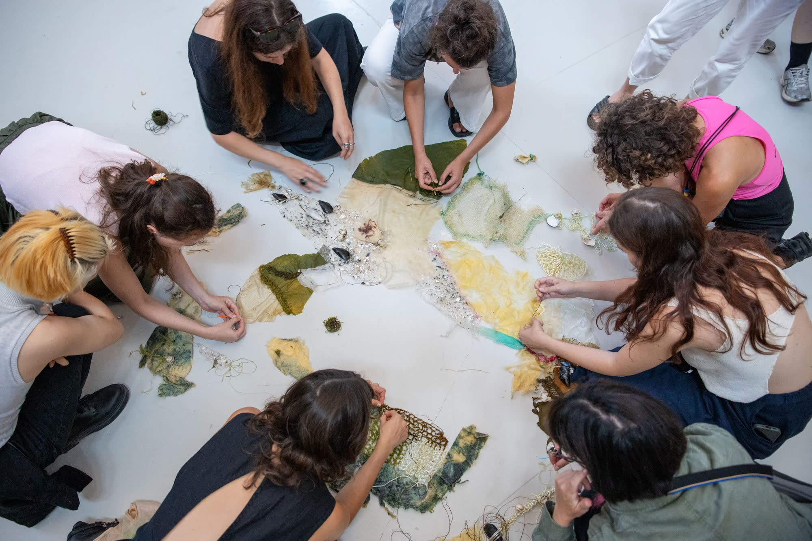

Education
Learn to read a material.
Not a recipe to follow, but a way to understand matter and build your own experimental practice.

Educational approach
How Emi BioLab teaches
ObservationUnderstandingExperimentationAutonomy
For designers, artists, students and curious makers. No lab needed: most of the work starts in a kitchen.
Approach text to write with Emi.

Featured workshops
Upcoming
Featured courses
Self-paced
Future education
Emi BioLab School
A school for material experimentation and biodesign, with biomaterials as the first learning path. Opening 2027.
Hidden from the menu until the school is ready.